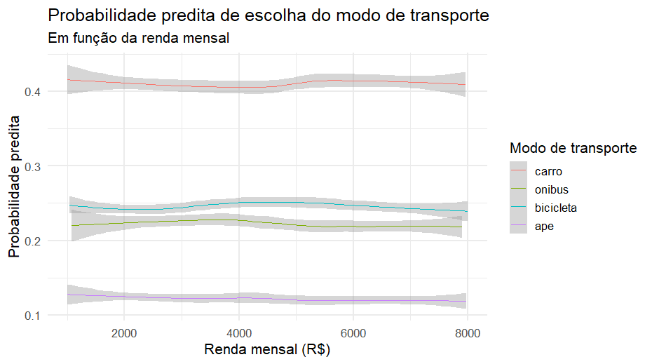

Me explique como se eu fosse um bebê o que é e para que serve o teste de Hausman-McFadden.
Recentemente estive trabalhando em um problema e me deparei com uma dúvida sobre um teste estatístico que tive que realizar. Apelei para o [ChatGPT](https://chatgpt.com) da OpenAi Inc. que me forneceu uma resposta tão boa que resolvi reproduzí-la aqui.
Perfeito, Jobenil 😊 — vamos começar bem simples, como se estivéssemos brincando de explicar um conceito estatístico para uma criança curiosa.
🧸 Imagine assim:
Temos três brinquedos: um carrinho 🚗, uma boneca 🧍♀️ e um aviãozinho ✈️. E você pode escolher um só para brincar.
Agora, pense que algumas crianças escolhem o carrinho, outras a boneca, e outras o aviãozinho. Você quer entender por que cada uma escolhe o que escolhe. Pode ser por causa da cor, do tamanho, do barulho que faz, etc.
🧠 O modelo que usamos
Para estudar isso, usamos um modelo chamado Logit Multinomial (MNL) — ele tenta prever a probabilidade de uma criança escolher cada brinquedo com base em características (das crianças ou dos brinquedos).
Esse modelo tem uma regra importante chamada IIA — em inglês, Independence of Irrelevant Alternatives, ou seja:
“A chance de escolher entre dois brinquedos não muda se eu colocar um novo brinquedo parecido na caixa.”
Por exemplo:
Se uma criança escolhe entre 🚗 e ✈️, e gosta mais do carro, a relação entre carro e avião não deveria mudar só porque eu coloquei uma moto 🏍️ nova na caixa.
Mas… será que isso é verdade na vida real?
🔍 Entra o Teste de Hausman-McFadden
O Teste de Hausman-McFadden (ou teste H-M) serve para verificar se essa regra IIA é válida no seu modelo.
Ele faz o seguinte:
Primeiro, o modelo é estimado com todas as opções (🚗, 🧍♀️, ✈️).
Depois, é estimado tirando uma das opções (por exemplo, sem o avião ✈️).
O teste compara os coeficientes estimados nos dois modelos.
Se não houver diferença significativa, quer dizer que:
As alternativas realmente são independentes → o modelo MNL é adequado ✅
Mas se houver diferença grande, então:
As escolhas não são independentes → o modelo MNL não serve bem, e precisamos de um modelo mais flexível (como o Logit Aninhado, o nested logit) 🚫
🎯 Em resumo:
| Conceito | Explicação “de bebê” |
|---|---|
| O que é? | Um teste para ver se as opções de escolha são realmente independentes entre si. |
| Por que serve? | Para saber se o modelo Logit Multinomial está “pensando certo” ou está enganando a gente. |
| Como faz isso? | Compara os resultados do modelo completo e de um modelo onde tiramos uma opção. |
| O que significa o resultado? | Se der diferente → o modelo está violando a regra IIA. Se der igual → o modelo é adequado. |
🧩 Um exemplo prático real:
Suponha que estejamos estudando o modo de transporte que as pessoas escolhem para ir ao trabalho: 🚗 carro, 🚌 ônibus, 🚲 bicicleta, 🚶♂️ a pé.
Se o teste Hausman-McFadden mostrar que tirar o ônibus muda os coeficientes do carro e da bicicleta, então significa que:
as escolhas não são independentes — talvez quem pega ônibus também escolheria metrô, se houvesse. Logo, o modelo Logit Multinomial simples não é o mais indicado.
Fizemos uma simulação em R, onde tentamos representar uma situação prática — o modo de transporte para o trabalho — e aplicando o teste de Hausman-McFadden para verificar se a hipótese de independência das alternativas (IIA) é válida.
🚗 Exemplo: Escolha do modo de transporte
Com 4 alternativas possíveis:
carro
ônibus
bicicleta
a pé
Cada pessoa escolhe um modo para ir ao trabalho, dependendo de:
tempo de viagem (
tempo)custo da viagem (
custo)renda mensal (
renda)
📊 Interpretação do resultado
O comando hmftest() retorna algo assim:
Hausman-McFadden test data: modelo_completo and modelo_sem_bike chisq = 5.42, df = 3, p-value = 0.143 Interpretação:
O valor-p = 0.143 é maior que 0.05,
o que nos indica que não rejeitamos H₀, ou seja, que as alternativas são independentes.
✅ O modelo respeita a suposição de IIA.Se o valor-p fosse menor que 0.05, teríamos que rejeitar a hipótese de independência, indicando que as escolhas estão correlacionadas — nesse caso, o modelo Logistico Multinomial (MNL) não seria apropriado.

🧩 Resumo didático
| Etapa | O que fizemos | Por quê |
|---|---|---|
| 1️⃣ | Simulamos escolhas de transporte | Para ter dados realistas |
| 2️⃣ | Montamos o modelo Logit Multinomial | Para estimar preferências |
| 3️⃣ | Retiramos uma alternativa | Para testar a regra de independência |
| 4️⃣ | Aplicamos o Teste de Hausman-McFadden | Para verificar a validade do modelo |
| 5️⃣ | Interpretamos o p-valor | Para decidir se o modelo é adequado |
Se você quiser se aprofundar no assunto recomendo a leitura desse artigo. Nele você encontrará outras referências. Obrigado pela leitura!!!
EDA | TESTE T | ENQUETES | ANOVA | MODELOS DE REGRESSÃO | ANÁLISE FATORIAL | MODELAGEM DE EQUAÇÕES ESTRUTURAIS | TRI | RASCH MODELS | MACHINE LEARNING